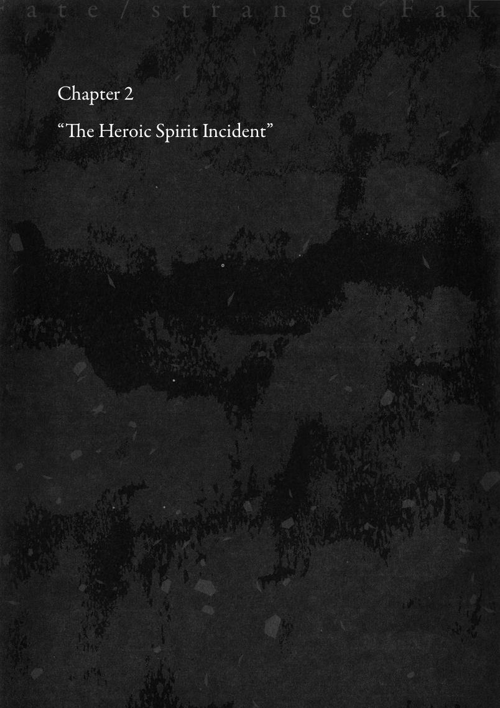
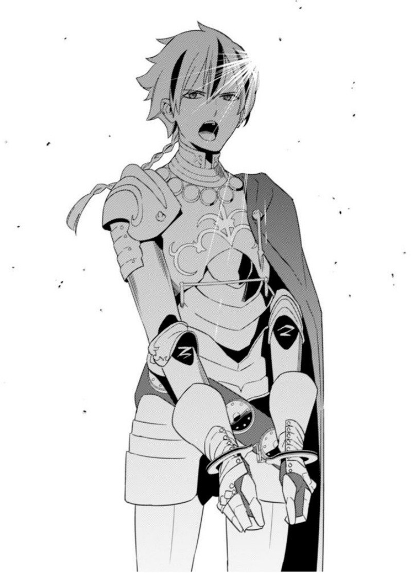

Capítulo 2: Dia 0, Meia-Noite
Em algum lugar.
"Ah, então é aí que você está. Precisava aparecer justamente ali, sua peãozinha sacrificial."
Na escuridão, Francesca deixou os ombros caírem com um ar de tédio e observou a cena refletida em sua bola de cristal. Era uma imagem da antiga casa de ópera de Snowfield.
"Sério, o Espírito Heroico invocado ali com certeza é Art." Na imagem, ela podia ver a silhueta de uma jovem se esgueirando furtivamente para dentro da casa de ópera. "Queria que você tivesse ido ao lugar do Sigma. Eles têm um forte fator de incerteza, e a sinergia teria tornado tudo muito mais interessante," resmungou a garota de roupas gótico-lolita para si mesma, logo recuperando o sorriso enquanto continuava:
"Bom, talvez seja melhor assim. Acabei de ter uma ideia para um jogo divertido." Ela entrou em contato com alguém por meio de magia e voltou a atenção para o cristal. Havia ficado encarando-o vaziamente na escuridão por cerca de dez minutos quando —
Uma luz poderosa emanou do cristal. Naquele instante, ela percebeu uma peculiaridade na imagem que fez seus olhos brilharem.
"Oh? O que é isso? Quem será? Assassin, talvez?" As palavras mal haviam saído de sua boca quando outra mudança varreu a imagem. Francesca encarou excitada o "cadáver" na bola de cristal e soltou uma risada estridente.
"Ahahaha! Incrível! Fantástico! Um acidente de repente! O que vai acontecer agora?" Francesca exibiu um sorriso extasiado, as bochechas coradas de forma obscena enquanto os olhos brilhavam como os de uma criança.
"Oh! Art, o que você vai fazer agora? Seu Mestre morreu no instante em que você foi invocado! Não é dramático?"
Ela gritou desvairadamente, e enquanto isso riu, riu, riu — Ao avistar a próxima coisa refletida na bola de cristal, tombou a cabeça de lado languidamente, ainda sorrindo.
"...O que é isso?" Então, com a cabeça cheia de pontos de interrogação, murmurou: "Quem é... aquele Saber?"
América. Snowfield.
Dentro da casa de ópera parcialmente destruída, Ayaka Sajou xingava o próprio destino. Não podia fazer diferente, mesmo que tivesse sido ela a provocar tudo aquilo. Porque as circunstâncias em que se encontrava pareciam nada mais do que uma brincadeira de algum deus ou demônio.
Deitado ao lado dela havia um cadáver humano. Não havia ferida externa, mas o corpo do homem estava rígido, com um ar de agonia como se o coração tivesse sido esmagado. Ela não conseguia detectar o mínimo sinal de vida.
Para os olhos de Ayaka, parecia que uma mão havia realmente esmagado o coração dele. Mas... o coração havia sumido, e não havia rastro de rasgão na camisa, muito menos de ferimento no peito.
E o "alguém" que havia esmagado o coração dele também havia sumido. Ela havia sido forçada a recuar pelo homem misterioso que surgira diante dos olhos de Ayaka.
A história volta um pouco. Alguns minutos antes, Ayaka era uma prisioneira. Havia sido amarrada da cabeça aos pés com um cordão mágico pertencente àquilo que o cadáver havia sido antes de se tornar um cadáver — um mago.
"Você certamente me subestimou para imaginar que conseguiria se esconder de mim assim." O mago parecia surpreso. Examinou o corpo de Ayaka de cima a baixo e inclinou a cabeça. "Essas marcas parecem Selos de Comando... Então você é a que Faldeus mencionou. O que você quer?"
"...Não faço ideia. Uma mulher branca estranha me mandou vir, então vim." O tom de Ayaka era brusco. Seus olhos transbordavam resignação diante do mundo e raiva por sua situação absurda.
O mago percebeu isso, deu um encolher de ombros interno e continuou sem interesse aparente. "Entendo. Suponho que isso faz de você uma pobre maga errante transformada em peão sacrificial para a 'marionete de carne' dos Einzbern... Bom, não posso deixar que você atrapalhe o ritual. Desculpe, mas vou me ocupar de você primeiro."
O mago fez a mana fluir pelos Circuitos Mágicos que cruzavam seu corpo e estava prestes a encerrar a vida de Ayaka sem emoção, como se fosse apenas trabalho, quando —
"...Humph." Ele parou de repente e tocou um dedo no brinco que parecia ser algum tipo de artefato mágico.
"Sim... ... Essa mulher? Por quê?"
Ele parecia estar conversando com alguém pelo brinco, mas Ayaka, é claro, não conseguia ouvir o outro lado da conversa.
"...Entendo. Compreendido. Vou topar o seu jogo." Depois de encerrar a chamada, o mago soltou um suspiro longo e voltou a encarar Ayaka, que continuava amarrada.
"Pode ser um mero capricho, mas não posso dizer que não estou interessado." "...?" "Ah, vou apenas ver quanta lealdade o Espírito Heroico que estou prestes a invocar vai me jurar." O rosto do mago se torceu levemente e ele sufocou uma risada enquanto continuava. "Quero saber se o nobre herói outrora aclamado como rei dos Cavaleiros da Távola Redonda vai obedecer uma ordem de matar uma mulher indefesa."
Tudo o que Ayaka conseguiu entender foi que provavelmente seria morta pelo "nobre herói" que estava prestes a ser invocado.
"E se esse tal da Távola Redonda se recusar a me matar... eu ainda não vou ser poupada, vou?" Ayaka falou com cinismo e sem entusiasmo.
"Eu poderia sempre usar um Selo de Comando, mas infelizmente não sou hedonista o suficiente para desperdiçar um num jogo. Vou apenas torcer seu pescoço com esse cordão."
"Tem certeza que é sensato? Se você não me matar primeiro, posso arruinar seu ritual." "Sua voz está tremendo. Não blefe." O mago manteve o ar de indiferença diante do sarcasmo meio desesperado de Ayaka. "Você sabe por que praticamente revelar o verdadeiro nome do Espírito Heroico que vou invocar?"
"...?" "Fiz isso porque essa invocação é mais uma 'declaração de guerra'. Não importa se vazar; pelo contrário, ouvi dizer que vai criar uma ironia magnífica quando chegar aos Einzbern e à Associação pelo seu empregador. Totalmente inútil, na minha opinião, mas recebo o mesmo."
Entre magos, era senso comum básico ocultar informações, mas esse mago apenas deu de ombros enquanto continuava a relatar sua comissão de espalhar a notícia.
"Em resumo, já previmos a infiltração pela qual você arriscou sua vida." "..." "Por falar nisso, eu teria gostado de verificar se esses falsos Selos de Comando têm o poder de obstruir minha invocação, mas... Honestamente, tenho certeza de que Francesca nos vê como apenas mais um de seus brinquedos. Bom, mesmo que você lute e estrague o ritual, ainda recebo. Vou aceitar que tirei a palha mais curta e desistir da guerra."
Ayaka baixou os olhos em silêncio, sentindo a parte do cordão mágico que estrangulava seu pescoço se retesar.
O mago, indiferente à sua condição, começou a recitar um encantamento diante do altar posicionado no palco.
"Pelos elementos, prata e ferro. Pelo fundamento, pedra e o Arquiduque dos Contratos."
A sucessão de palavras nada significava para Ayaka. Ao mesmo tempo, era uma contagem regressiva para sua morte.
"Pelo ancestral, meu grande mestre _______."
Cedo demais. Ayaka gemeu suavemente, ouvindo o canto do mago como se não fosse com ela. Então, minha fuga dramática termina num lugar assim.
"Pelo vento que pousa, uma muralha. As portas das quatro direções se fecham."
Isso é um simples capricho do destino, ou é a maldição "dela"? Preferia que fosse a segunda opção, se possível. Bom... se for, será que isso já chega para satisfazer... "ela"? Ela achou que ter uma razão para tudo tornaria as coisas um pouco mais suportáveis. Como se estivesse fugindo da realidade de que estava prestes a morrer. "...?" De repente, ela notou. Notou as correntes de poder estranho que fluíam pelo corpo à medida que o canto do mago preenchia o salão. Era como se todo o sangue no corpo tivesse se tornado ferro e sentisse a atração de um ímã externo.
Logo Ayaka percebeu que a pulsação não estava nas veias, mas emanava de cinco tatuagens inscritas em vários pontos do corpo.
Ressentimento profundo, ou grande alegria. Ela alucinava que seu corpo inteiro, tendo as tatuagens como pontos focais, emitia um grito. Aos poucos, o grito foi crescendo e abafando o canto do mago.
O mago, porém, não parecia notar a mudança. Estava alerta, mantendo um fluxo contínuo de mana para as restrições mágicas dela, mas não parecia ter intenção de interromper o ritual de invocação...
Mas então, mesmo que alguma grande Magia fosse invocada, Ayaka não achava que isso traria desenvolvimentos otimistas, como incapacitar o mago ou teleportá-la automaticamente para um lugar seguro.
Não podia ser uma autodestruição, podia? De qualquer forma, a própria morte era quase certa. Esse fato fez uma onda de medo percorrer Ayaka, e junto dele um desejo: "Não quero morrer."
Mas até esses sentimentos pareciam de alguma forma estar acontecendo com outra pessoa. Não quero morrer? Por quê? Que razão tenho para viver? Ayaka não conseguia dizer se era o próprio cérebro levantando essas dúvidas, ou se eram as tatuagens inscritas nos braços e a maldição que a "mulher branca" havia embutido nelas fazendo-o fazer isso. O ruído das tatuagens havia crescido tanto que havia paralisado sua capacidade básica de julgamento. Elas pareciam torcer, ou gritar, como se fossem dar boas-vindas a algo que estava prestes a aparecer. Então, no instante seguinte —
A "morte" corpórea desceu sobre o palco da casa de ópera. Mas não sobre Ayaka; por trás do mago que devia ter sido seu algoz.
"Emerge do anel de restrição, ó Guardiã das... balanças...?"
Há quanto tempo "aquilo" estava ali? Para os olhos de Ayaka, ao menos, parecia ter se materializado do nada.
Uma figura humana miúda envolta em mantos negros como sombra. Ayaka podia ver que seu corpo inteiro estava coberto por tecido preto, mas não conseguia distinguir o rosto. Tudo o que lembrava com clareza era o momento em que um braço estranhamente longo se estendeu por uma fenda nos mantos e pousou sobre o peito de sua vítima.
Assim que viu isso, Ayaka soube. Soube que a situação em que se encontrava não pertencia mais ao mundo que conhecia — estava do outro lado das sombras do mundo, invisível aos olhos de quem leva uma vida humana comum. No momento em que percebeu isso, uma figura humana diminuta surgiu em seu campo de visão.
Uma jovem garota usando uma capinha vermelha.
Se era mesmo um fantasma ou uma imagem real, Ayaka em sua confusão não conseguia dizer. Por que aqui? Este prédio nem tem... elevador. A "coisa" que havia aparecido no palco da casa de ópera parecia estar de pé sobre o cadáver. "Ela" encarou Ayaka com um sorriso inocente.
Antes mesmo de compreender o que aquele sorriso significava, o pavor percorreu Ayaka da cabeça aos pés. Era difícil dizer o que vinha primeiro: o arrepio quase audível que correu pela espinha de Ayaka, ou a intrusa de manto preto esmagando a coisa parecida com um coração que apareceu em sua mão longa.
"Gah... bah...?" O mago vomitou sangue, ainda sem compreender o que havia acontecido com seu corpo. Era duvidoso se ele sequer percebeu quem o havia matado.
Ayaka estava aterrorizada tanto pela figura de manto preto quanto pela garota de vermelho, mas ao mesmo tempo pensava pensamentos distanciados, de alguma forma impessoais, como "Ah, seria horrível se eles me confundissem e achassem que fui eu que o matei." Ela provavelmente sabia instintivamente que seria esmagada pelo medo se não fizesse isso.
No momento em que o mago cessou de se mover, o cordão mágico que havia prendido Ayaka da cabeça aos pés se desfez. A percepção de que estava livre a distraiu por um momento, e nesse momento —
A garota de vermelho desapareceu de sua visão — E a figura de manto preto estava em seu lugar. "...!" A respiração parou. "...Você é uma maga que busca o Santo Graal?" Uma pergunta mecânica. Quando ouviu a voz da figura, um frio tão intenso que o que havia sentido antes não se comparava atravessou Ayaka como inúmeras agulhas.
Pela voz, Ayaka percebeu que a figura era uma jovem mulher. Talvez até mais jovem do que ela própria. Mas o senso de presença que o corpo da mulher emanava era incomparavelmente mais frio, mais afiado e mais opressivo do que o do mago que havia ameaçado matá-la. Mesmo sem jamais ter encontrado esse ser antes, havia coisas de que ela tinha certeza.
Se eu responder errado, serei morta. Se eu mentir, provavelmente também serei morta. A mulher ainda não tinha intenção de matá-la. Mas se Ayaka fizesse uma escolha errada, não teria tempo de perceber essa mudança antes de acabar como o mago cujo cadáver jazia no chão à sua frente. Chegando a essa conclusão, Ayaka decidiu dar uma resposta honesta à mulher de manto preto.
"Eu—" Naquele momento — Uma onda de luz envolveu o palco. "!"
"!?" A mulher de manto preto ficou em guarda e saltou para fora da luz, mas Ayaka, que havia acabado de ser libertada das restrições, nem conseguia se levantar. O máximo que podia fazer era semicerrar os olhos na direção de onde a luz parecia vir.
Havia uma figura na luz. Múltiplas figuras humanas. Ayaka não conseguia acreditar no que via. A cena durou apenas alguns segundos, mas o tempo naquele espaço parecia ter parado. Várias das figuras se ajoelharam no lugar... e deram as boas-vindas à última, e mais sombria, figura a aparecer.
À medida que a luz diminuía, as múltiplas figuras desapareceram antes que Ayaka pudesse perceber, e apenas a última e mais vívida figura permaneceu: um homem loiro, ainda jovem e magnificamente vestido. Aqui e ali seu cabelo dourado era atravessado por mechas vermelhas, e um par de olhos ardentes e bestiais estava incrustado em seu belo rosto.
Assim como Ayaka havia sido capaz de sentir uma "morte" quase palpável da mulher de manto preto, que agora encarava o homem de perto, ela podia sentir um extraordinário "calor" do homem que havia aparecido na luz.
O homem examinou os arredores de olhos arregalados e disse:
"Bem, isso parece um tanto fora do comum."
Depois de lançar um olhar ao cadáver do mago aos seus pés e à mulher de manto preto que o encarava com cautela... o homem continuou com um largo sorriso.
"Do jeito que você está vestida, e o fluxo de 'poder' que senti agora... Você é seguidora do 'Velho da Montanha', por acaso?"
"...!?" A atmosfera mudou instantaneamente. As palavras do homem soavam como nonsense para Ayaka, mas pareciam atingir uma corda sensível na mulher de manto preto.
"De qualquer forma, enquanto ambos buscarmos o Santo Graal, seremos inimigos. O que você vai fazer?" Mal as palavras saíram de sua boca, a mulher de manto preto entrou em ação com um impulso de intenção assassina. Era como se uma sombra no chão tivesse saltado para o ar. Ela deu um salto até os bastidores em uma única respiração e deixou pós-imagens em seu rastro enquanto se movia em ziguezague entre as colunas que cercavam o palco. Quando voava pelas fendas nas cortinas, criava a ilusão de ter se dividido em dezenas de pessoas.
"Haha! Magnífico! Nunca vi ninguém mais lépido do que Loxley antes!" O homem, com olhos brilhando como os de uma criança, gritou um nome que Ayaka não reconheceu e elogiou
a mulher de manto preto enquanto ela se movia fulminante lançando olhares de morte a ele.
"..." Como se tivesse tomado o elogio como um desafio, a mulher saltou ainda mais rápido e então... desapareceu de repente no ar.
"Ela... desapareceu...?" Ayaka murmurou, perplexa, e olhou para cima. Naquele momento... a mulher de manto preto surgiu do ponto cego de todos ali presentes. Pulou pelas costas do homem, não de cima do palco, mas da sombra que ele projetava no chão.
Um braço estranhamente longo se estendeu de suas costas em direção ao centro das costas do homem, logo acima do coração. Um braço de morte clara, idêntico ao que havia massacrado o mago momentos antes.
Mas esse braço jamais alcançou o corpo do homem. Uma flecha disparada do nada o desviou do curso.
"...!?" Os olhos da mulher de manto preto se arregalaram levemente de surpresa. Para ela, o golpe viera de um ponto cego absoluto. Porque essa flecha havia surgido de repente aos pés do homem — de dentro da sombra que ele projetava no chão do palco.
"Haha, não gostou de ser comparada? Mas trabalho esplêndido, como sempre," o jovem aristocrata murmurou a lugar nenhum em particular, depois sacou a espada com um sorriso.
Era primorosamente trabalhada. Até Ayaka conseguia dizer que era o tipo de espada que realeza usava. Então, ainda sorrindo, ele soltou um grito... e golpeou.
"_____calibur."
Mais uma vez, luz envolveu o interior da casa de ópera. Ela jorrou da espada imbuída de mana do homem como um raio e foi direto à mulher de manto preto, que recuava às pressas. Então —
Um estrondo violento, seguido pelos sons de algo desabando, chegou aos ouvidos de Ayaka. Quando ela tímida e deslumbrada abriu os olhos, viu... o céu estrelado espreitando pelo teto destruído da casa de ópera parcialmente arruinada.
"..." O homem se dirigiu à garota pasma.
"Pergunto: você é minha Mestre?"
Ao ouvir essas palavras, o cérebro de Ayaka, que não havia conseguido acompanhar a
situação em mutação, finalmente começou a recuperar o equilíbrio.
Ela reconsiderou sua situação. Parecia que o "ritual" do mago havia sido realizado com sucesso, mas os resultados eram completamente diferentes do que lhe haviam dito. De acordo com a "mulher branca" que a havia trazido até ali contra sua vontade, o ritual deveria conjurar o fantasma de um herói antigo. Algo assim, pelo menos. A mulher branca o havia chamado de "Espírito Heroico", mas também havia dito que haveria apenas um deles. Então por que ela havia conseguido ver múltiplas figuras na luz mais cedo? O próprio homem havia disparado aquela flecha quando estava em perigo?
As dúvidas de Ayaka se sucederam rapidamente, mas logo ela parou de se importar. À medida que a cabeça esfriava, ela percebeu a posição em que havia sido colocada e sentiu náusea.
O cadáver do mago estava diante de seus olhos. Ele havia morrido. Na sua frente. Assim. O homem também olhou para o cadáver, mas apenas inclinou a cabeça levemente para o lado e se dirigiu a ela novamente. Não havia sinal de que aquilo tivesse sido algum choque particular.
"Fique tranquila, parece que nenhuma pessoa comum foi envolvida. Por outro lado, parece que a rebelde também escapou... Humph, ela se saiu bem para sair limpa de mim. Mesmo assim, não há como voltar atrás."
A morte de uma pessoa era normal para ele? Ayaka achou difícil aceitar isso. Ah, entendo agora. Então é esse tipo de coisa que... a "mulher branca" queria me fazer fazer. "Participar da Guerra do Santo Graal", ela disse. E é claro que é normal as pessoas morrerem em uma guerra.
Ela se perguntou como havia chegado a isso. Como as coisas haviam terminado assim. Como havia terminado levando esse tipo de vida.
"Sendo assim, pergunto mais uma vez." O homem fez uma pergunta a Ayaka enquanto ela jazia lamentando o passado. Parecia que ele não lhe daria tempo para refletir seriamente sobre como havia chegado até ali.
"..." Nessa situação caótica... ela tomou uma decisão sobre apenas uma coisa. Não posso aceitar mais mortes. Mesmo que o "destino" tente me forçar a isso. Mesmo que resistir a isso signifique morrer. Pelo menos morrerei lutando. Minha vida não vale nada de qualquer forma.
"Posso entender que você é minha Mestre? Sou, como pode ver, da classe Saber. Se compreender, vamos concluir nosso contrato agora —"
"Está errado." Mais perto do desespero total do que da resolução, Ayaka arrancou um grito do fundo da garganta. "Completamente errado."
"O quê?" As tatuagens em seu corpo brilharam fracamente em resposta à voz do homem, e ela percebeu que estavam ressoando com ele. Se concordasse em ser sua Mestre agora, provavelmente conseguiria usurpar o controle do Espírito Heroico, exatamente como a "mulher branca" havia lhe dito. Mas ela ignorou os planos da "mulher branca" e encarou o homem.
"Não vou... mais fazer o que vocês querem," ela declarou, forçando-se a não tremer de medo, e resolveu dar a vida se fosse preciso. "Só... me deixe em paz."
Ayaka tinha certeza de que seria morta pela espada do homem no momento em que falasse. Ele era diferente da mulher de manto preto, mas ela ainda conseguia sentir o poder de um ser extraordinário, completamente diferente de um humano comum, do homem à sua frente. As pessoas normais eram provavelmente como vermes para ele. Ou assim Ayaka pensava.
Mas, contrariando suas expectativas, ele inclinou a cabeça como se perplexo e recolocou a espada na bainha enquanto falava.
"Entendo, então você não é minha Mestre. Nesse caso, suponho que não há nada a ser feito." Então ele olhou para o teto quase na metade destruído e soltou um suspiro. "Isso é um teatro? Que pena..." Ele semicerrou os olhos como se tivesse recebido algum choque e cruzou os braços como se perdido em pensamentos.
"Então os teatros modernos são assim tão frágeis... Suponho que o conhecimento que obtive do Trono não é suficiente para realmente compreender..."
Resmungando para si mesmo, o homem desapareceu nos bastidores do palco. Ayaka, que havia ficado para trás, ficou de boca aberta por alguns segundos antes de uma percepção repentina atingi-la.
"Estou... salva?" Mas o pensamento durou pouco... "Não se mova!" O grito raivoso de um homem veio de uma das entradas. Era um homem diferente do anterior, mas Ayaka conseguiu identificá-lo imediatamente. Os homens que apareceram pela entrada usavam uniformes iguais — uniformes policiais — e apontavam pistolas Taser de controle de distúrbios para Ayaka. Não haviam sacado as armas de fogo, mesmo com a área deserta, talvez porque um olhar dissesse que Ayaka estava desarmada.
"Coloque as duas mãos atrás da cabeça e deite no chão! Devagar!" "...Sim, senhor," Ayaka respondeu sem entusiasmo e devagar fez o que lhe pediram. Obviamente sou a vítima aqui, ela pensou. Mas quando considerou que era uma invasora na cena do que parecia um ataque terrorista, bem, era provavelmente uma reação natural.
E além disso o cadáver do mago ainda estava deitado ao lado dela, e o altar suspeito que ele havia usado permanecia no palco.
Ayaka pensou que isso parecia que iria se tornar uma bagunça bastante complicada, quando um pensamento que seria difícil para qualquer outra pessoa entender lhe cruzou a mente de repente.
Delegacias de polícia... têm elevadores, não têm? Ah, que deprimente. Na verdade, posso morrer pela maldição da "mulher branca" antes disso acontecer. Enquanto Ayaka estava perdida em pensamentos, os policiais a cercaram e confirmaram que o mago ao seu lado estava morto.
"Ei! Você fez isso?" "Não, não. Sou a vítima aqui," Ayaka respondeu em inglês fluente. O policial que segurava seus braços respondeu.
"Se for verdade, então o que aconteceu aqui? Por que você está na casa de ópera enquanto está fechada para reforma?"
"Hmm... Bom, veja..." Ayaka considerou mentir que havia sido sequestrada pelo mago, mas seria logo exposta se verificassem as câmeras de vigilância locais, e isso só tornaria as coisas ainda mais confusas. Mas também não podia dizer a verdade.
Os policiais pareciam ter concluído que a relutância de Ayaka em falar era de fato suspeita, e um deles sacou um par de algemas.
"Você está presa por invasão de propriedade e suspeita de terrorismo e destruição de patrimônio. Você tem o direito de permanecer em silêncio..."
Nossa, eles realmente dizem isso. Ayaka se pegou pensando enquanto ouvia o aviso Miranda que havia visto tantas vezes em seriados americanos. Ela não sabia o que aconteceria depois. Estava preparada para morrer, mas não conseguia aceitar morrer ainda falsamente acusada pelo assassinato do mago e pela destruição da casa de ópera. Ela ainda estava deitada de bruços ponderando isso, quando abriu os olhos... e "ela" estava lá de novo.
Uma jovem garota usando uma capinha vermelha. Os policiais pareciam não conseguir vê-la. Passavam de um lado para o outro pela área onde ela estava sem nenhum comentário.
A capinha vermelha estava puxada bem para frente, e Ayaka não conseguia distinguir nada acima do nariz. Mas a garota a olhava e sorria fracamente. Abriu a boca para dizer algo.
Ayaka não queria ouvir. Não queria mais ver. Mas ainda assim não conseguia desviar o olhar.
Ayaka sabia por quê. Isso era uma maldição que ela havia causado a si mesma, e a havia prendido por anos.
A garota com a capinha vermelha estava tentando lhe dizer algo, quando... "Espere." Uma voz de comando ecoou pela casa de ópera. Ao mesmo tempo, a garota com a capinha vermelha desapareceu.
Quando Ayaka e os policiais se voltaram para olhar na direção da voz, viram um homem esplêndido em traje nobre de pé entre as poltronas VIP solitárias numa parte do terceiro andar que havia escapado do desabamento.
Hã? Aquele é... Por que ele ainda está aqui? Ayaka se perguntou, mas o homem encarou Ayaka e os policiais e declarou unilateralmente: "Darei testemunho. Não foi essa garota de óculos que matou o homem." "Quem está aí? Não se mova!" Talvez fosse uma questão de distância. Não eram Tasers que os policiais apontavam para o homem enquanto gritavam, mas armas de fogo. O homem, porém, não deu nenhum sinal de se importar e continuou a proferir seu discurso majestosamente.
"Aliás, não foi ela que destruiu este teatro tampouco." "O quê?" "Fui eu, com esta espada." O homem deu uma palmada audível na bainha da espada presa à cintura enquanto falava. Os policiais franziam o cenho. Trocaram sinais com os olhos, e vários correram em direção às poltronas VIP onde o homem estava. Não pareciam acreditar na história de que ele havia feito aquilo com a espada, mas pareciam estar de sobreaviso em relação a esse homem que havia se declarado culpado.
"Cuidado, ele pode ter plantado mais bombas." O homem parecia ter ouvido os sussurros dos policiais, porque começou a soar irritado. "Prefiro não ser comparado a bombas e... Hm?" Parou no meio da frase. Parte do teto semi-destruído havia começado a desabar novamente. "Cuidado..." Ayaka murmurou instintivamente. Os policiais também perceberam e tentaram correr, mas não parecia que vários deles conseguiriam sair a tempo.
Então o homem nas poltronas VIP pousou a mão na espada à cintura e a sacou num movimento que lembrava o Iai japonês.
O poder mal se comparava ao golpe anterior, mas um raio de luz ainda se estendeu da lâmina e pulverizou o bloco de pedra caindo em átomos.
Tanto os policiais que haviam sido salvos por um fio sem entender o que havia acontecido, quanto os que haviam ficado impotentes em seus lugares seguros, foram deixados
piscando de espanto.
O homem que havia realizado essa façanha se dirigiu aos atônitos policiais com uma postura régia. Enquanto falava, voltou o olhar para Ayaka por um momento e esboçou um pequeno sorriso.
"Isso é suficiente para provar minha culpa?"
Ao mesmo tempo. A oeste de Snowfield, na floresta.
"...Sinto uma presença estranha." Enkidu, o Espírito Heroico Lancer, que havia passado um dia com o lobo prateado que era seu Mestre transformando a floresta em um Campo Limitado, sentiu uma perturbação no fluxo de mana vindo da cidade e murmurou com curiosidade.
"Sete almas a serviço de uma poderosa. E outra alma estranha ao lado delas. Será que podem ser?"
O lobo prateado pareceu intuir a tensão de Enkidu e soltou um ganido ansioso. Enkidu respondeu com uma voz tranquilizadora enquanto acariciava o dorso de seu Mestre. "Está bem. Não vou a lugar nenhum esta noite. Tenho meus próprios preparativos a fazer para que eu possa enfrentar Gil no fim com toda a minha força."
Em frente à casa de ópera.
"Estamos transmitindo ao vivo do centro da cidade, onde parte da casa de ópera acaba de desabar. O que terá acontecido com este histórico edifício, que ostenta mais de cinquenta anos de tradição?"
Uma repórter da emissora de TV a cabo local de Snowfield mantinha um comentário ao vivo em frente à casa de ópera parcialmente destruída. A repórter, que já havia entrevistado várias pessoas, chamou um jovem próximo.
"Com licença, tem um minuto? O senhor sabe o que aconteceu aqui?" "Hã? Estou na televisão? Nossa, será que o professor ou a Reines estão assistindo!" O jovem em questão usava um relógio de pulso estilo steampunk. "É daqui da cidade?" "Ah, não! Vim a passeio, e... Hmm, eu também não sei o que aconteceu, mas quando fui dormir meu coração de repente foi a mil, e quando olhei para a casa de ópera, houve um estrondo enorme, e a parede começou a desmoronar assim!"
"Seu coração foi a mil?" "É, foi, hmm... uma intuição! É isso!" A repórter lançou um olhar suspeito ao jovem, que agia como se estivesse escondendo algo, mas naquele momento... eles sentiram um movimento na direção da casa de ópera, agradeceram superficialmente ao jovem e saíram sem pressioná-lo mais.
"Os policiais que entraram no edifício acabaram de sair! A polícia está detendo alguém! Será que a explosão na casa de ópera não foi um acidente, mas um atentado deliberado?"
A câmera de TV filmava o grupo que saía da cena e transmitia a imagem ao vivo para televisores em todo Snowfield. A imagem do jovem em traje anacrônico saindo algemado pela polícia.
Ao mesmo tempo. Noroeste de Snowfield. Centro Correcional Especial Colesman.
"Meu Deus, isso se tornou um verdadeiro incômodo. Quer dizer, problemas na invocação do tão importante Saber... Isso deveria estar sob a jurisdição da Sra. Francesca; talvez seu mau hábito tenha voltado a aparecer."
Faldeus soltou um suspiro, mas então começou a entrar em contato com vários locais, como se dissesse que esse grau de problema estava dentro das expectativas.
"Sou eu. O incidente na casa de ópera deve ser noticiado como acidente. Algumas tintas usadas na reforma pegaram fogo, e..."
Havia chegado até ali quando suas palavras abruptamente cessaram. "...Com licença. Voltarei a entrar em contato em breve." Ele encerrou a chamada e voltou o olhar para um de seus inúmeros bancos de monitores, uma tela que exibia a transmissão do canal local a cabo.
Quando viu o que estava sendo mostrado, ele inicialmente se perguntou se um mago hostil não estaria lhe mostrando algum tipo de ilusão. Qualquer mago bem versado na Guerra do Santo Graal provavelmente teria tido a mesma dúvida. Afinal, canal local a cabo que fosse, mas... um Espírito Heroico genuíno estava sendo mostrado em uma transmissão televisiva ao vivo.
Em frente à casa de ópera.
A multidão de curiosos se entreolhava ao avistar o traje anacrônico do jovem. Para todas as aparências, era o figurino de um ator que se preparava para uma apresentação. Talvez algum gás ou algo tivesse explodido durante um ensaio? Quando consideravam o incidente com o oleoduto do deserto que havia sido noticiado de manhã, muitos dos curiosos ainda tendiam a achar que era um acidente. Até a repórter começava a pensar que talvez não tivesse sido um crime, mas algum contratempo durante a reforma.
Porém... O homem conduzido pela polícia de repente se lançou para frente — ainda algemado — e alcançou o topo do veículo mais alto ali, um caminhão de bombeiros, em apenas alguns saltos.
A multidão ficou de queixo caído ao ver o homem escalar o caminhão sem usar as mãos em nenhum momento, apoiando-se apenas na força das pernas. Os policiais atarantados apontaram Tasers para ele. E em meio ao ruído e ao tumulto...
"Ouvi-me, povo de Snowfield!"

A voz do homem carregava de forma estranha. "Tendo destruído vosso teatro, lugar sagrado onde se recitam poemas e se encena narrativas, estamos tomados de vergonha. Tudo se deve à Nossa negligência. Não daremos desculpas."
Como uma descarga direta no cérebro, o significado das palavras penetrou facilmente nas mentes de todos que as ouviram. Quase como um pacto mágico.
"Mas em vez de explicações, faremos uma promessa! Juramos pelo grande ancestral de Nossa cavalaria, Arthur Pendragon, e pelos grandes cavaleiros cujos cânticos de vitória ressoam em Nossa terra natal que, pela Nossa honra, compensaremos pela destruição deste teatro!"
Os cidadãos ouviram em silêncio reverente. Dificilmente se podia chamar de discurso; não havia durado nem trinta segundos. Quando consideravam apenas o significado das palavras, tendiam a descartá-las como absurdo. Mas vindo da boca do homem, aquelas palavras eram acompanhadas por um misterioso timbre de verdade que sacudia os ouvidos e os corações da multidão.
Ele realmente poderia pagar pelo teatro? Quem era esse homem? "Grato pela vossa atenção cortês! Rogamos que vossas vidas sejam plenas de cantos magníficos!"
Silêncio duvidoso imperou. Tendo dito o que tinha a dizer, o homem desceu do caminhão de bombeiros com satisfação. Então, simplesmente assim, foi acomodado numa viatura e levado embora. Ninguém falou. Todos estavam dominados pela atmosfera que o homem havia projetado.
Exceto por uma pessoa, o jovem que havia sido entrevistado antes. Ele se voltou para o relógio em seu pulso, com olhos brilhando, e aplaudiu enquanto sussurrava:
"Incrível! Que estilo! Aposto que ele é o rei de algum lugar! Que carisma! Ah, Jack, tive uma ideia! Vamos fazer de conta que você realmente era o rei de algum lugar também!"
"Bom, há certamente numerosas teorias de que eu era na verdade da realeza, mas... é isso realmente no que devemos estar pensando depois de ver um Espírito Heroico, um de nossos inimigos, pessoalmente pela primeira vez? Tenho a sensação de que ele acabou de deixar várias pistas sobre o seu verdadeiro nome. Arthur Pendragon e tal?"
"Ah, vai ser muito mais divertido e emocionante descobrir quem ele é depois! Sei lá, vamos não lutar contra ele e fazer amizade. Digo, ele é tão legal."
"Fiquei genuinamente preocupado se você compreende o significado da Guerra do Santo Graal."
Enquanto o par de Espírito Heroico e Mestre conversava, uma jovem de óculos saiu discretamente, ainda sem algemas, e foi colocada numa viatura. As cabeças dos curiosos ainda estavam cheias do homem que havia aparecido momentos antes, e a maioria não a percebeu. Apenas aquele jovem Mestre, Flat Escardos, apresentou uma reação incomum.
"Hã?" "Algum problema?" "Não, essa pessoa agora... talvez seja só imaginação minha." Flat ficou olhando para a viatura, com a cabeça inclinada para o lado, e manteve essa atitude enquanto retomava a conversa telepática com o Espírito Heroico.
Bom, dizer telepatia, mas Flat na verdade falava em voz alta, e assim passou a ser considerado pelos outros curiosos como "um cara perigoso que se empolga e fala sozinho."
Assim, embora fosse uma questão de apenas alguns minutos, para os cidadãos de Snowfield o "discurso do homem misterioso" foi um evento inesquecível, não só para os curiosos que estavam na cena, mas também para os que haviam ouvido sua voz pelo canal local a cabo.
E para os magos que espreitavam por meio de familiares e câmeras de vigilância também.
Ao mesmo tempo. Noroeste de Snowfield. Centro Correcional Especial Colesman.
"Meu Deus. Isso é mais do que só inesperado." Diante de uma situação preocupante, Faldeus — uma das forças motrizes por trás da "Guerra do Santo Graal Falsa" — sacudiu a cabeça e suspirou.
"Tanto para ajudar em sua fuga. Ele devia ter aprendido sobre o sigilo da magia pelo Graal assim que fosse invocado..."
Assistindo à transmissão a cabo e à filmagem transmitida a ele por familiares ao mesmo tempo, Faldeus estava sem saber o que fazer.
"Estávamos totalmente preparados para fazer inimigos da Associação e da Igreja, e espalhamos a notícia para os magos, mas... quem imaginaria que um Servo iria à televisão e prometeria reparações a cidadãos comuns?" Faldeus resmungou, aparentemente para sua subordinada Aludra, que estava ao seu lado, e deu uma pequena sacudida de cabeça.
Ele conseguia sentir a presença do homem apenas por familiares, mas era inegavelmente um Espírito Heroico.
"Se ele tivesse assumido a forma espiritual a polícia não seria capaz de vê-lo, muito menos algemá-lo. O que diabos ele está pensando...?"
Faldeus então voltou a atenção para a jovem de óculos que havia saído discretamente depois do homem.
"...A mulher tatuada." Era a mulher que havia chegado à cidade meio dia antes. A que estava tatuada com desenhos que lembravam Selos de Comando.
"Mesmo assim, com certeza informei à Sra. Francesca que ela estava indo para a casa de ópera." Várias preocupações ocorreram a Faldeus enquanto suspirava e se perguntava para que havia se dado ao trabalho de aumentar o nível de vigilância.
E se deixar-se ser presa pela polícia faz parte do plano dessa mulher? O que havia acontecido com Cashura, o mago responsável pelo Saber? Eliminado? Por essa mulher? É possível que ela suspeite que a delegacia de polícia seja aliada deles, e esteja usando isso para levar seu Espírito Heroico para dentro?
Não, mesmo que seja, deveria haver algum outro jeito. As perguntas eram intermináveis, mas Faldeus julgou que ponderá-las agora não produziria respostas.
"...Isso ainda está dentro de seus cálculos, então, Sra. Francesca?" ele murmurou, encarando contrariado o teto.
Em algum lugar.
"Ah, que absurdo! Inconcebível! Inesperado! Completamente imprevisto! Mas suponho que são coisas assim que fazem a vida valer a pena! Que divertido! Ahahahahaha!"
Francesca estava sozinha no quarto escuro, se contorcendo de tanto rir. "Hihihi, hahahahaha! Hahaha! Ah, chega! É bom demais! Meu baço e ductos biliares vão se retorcer todos!"
Ela ficou de costas, batendo os pés com um sorriso sincero. O tempo todo que Francesca gritava, as bochechas coradas de empolgação.
"Ah! Ah! Já assisti a tantas Guerras do Graal, mas nem eu nunca vi um Servo ser preso pela polícia antes! Não sei por que Art não apareceu mesmo usando aquele médium, mas nem me importo mais!"
Ela continuou a rir por mais uns três minutos. Depois disso, cambaleou para se levantar,
enxugando as lágrimas dos olhos, e voltou o olhar para a bola de cristal. Refletido nela estava uma cena daquele Saber sendo mandado sair da viatura e levado para dentro da delegacia.
"Ah, já vejo. É assim que é," Francesca continuou feliz a falar sozinha, acenando com a cabeça em aparente concordância com algo. "Os outros Mestres pelo menos já devem saber que há um Espírito Heroico na delegacia agora, então vão todos estar de olho na polícia! Ah, que terrível! Vou ficar aqui com meu lanche e torcer para você, então dê o seu melhor, Sr. Chefe de Polícia!"
Ao mesmo tempo. A Delegacia de Polícia.
"Aquele é... o Rei Arthur?" O chefe de polícia, Orlando Reeve, afastou as venezianas do escritório com os dedos e espreitou o estacionamento. Viu que o Espírito Heroico — aparentemente Saber — caminhava de forma majestosa demais para alguém sendo "conduzido" e suspirou com seu semblante azedo de sempre.
"Vejo que não enviamos o Clã Calatin a tempo." "Aconteceu no centro da cidade. Aparentemente alguns policiais em patrulha entraram antes de poderem se organizar," relatou sua secretária friamente. Quando terminou, ela perguntou ao chefe sobre os desdobramentos futuros.
"Como procedemos? Tratamos deles aqui dentro da delegacia?" "Reúna os membros do Clã Calatin aqui... mas primeiro, investigue a mulher que foi trazida. Descubra se ela é uma Mestre ou não. Dependendo das circunstâncias, pode ser que consigamos formar uma aliança."
"Uma aliança, senhor?" "Se o que Francesca nos disse for correto, aquele deve ser o Rei Arthur, mas... na televisão, ele jurou 'por Arthur Pendragon', não jurou?"
"Sim, senhor. Recebemos também um relatório nesse sentido dos policiais que estavam na cena." "Nesse caso, jurar por si mesmo não parece estranho para você? Ele pode muito bem ser algum herói ligado a Arthur — um cavaleiro da Távola Redonda — mas onde quer que venha, não podemos esperar desafiar Saber e sair ilesos. Se ele conseguir disparar seu Fantasma Nobre mesmo uma única vez no tempo entre eliminarmos seu Mestre e ele desaparecer, será problema."
O chefe juntou as mãos sobre a mesa, ocultando a boca enquanto continuava: "Para começar, se essa mulher é maga o suficiente para roubar o direito de ser a Mestre de Saber, é natural que ela tenha algum tipo de plano."
"Não tenho certeza disso, senhor. Também é possível que ela seja uma amadora que conhece apenas o rudimento da magia."
"Um fantoche dos Einzbern?" Na noite anterior haviam recebido um relatório de que um homúnculo Einzbern havia entrado na cidade. Faldeus e Francesca provavelmente sabiam disso também, mas o chefe ainda não havia trocado informações com eles nesse ponto.
Mas mesmo que os Einzbern não fizessem movimentos diretos, era uma possibilidade real que estivessem empregando algum mago externo. Se temessem traição, sempre poderiam encontrar algum meio de manipular uma amadora que simplesmente possuía Circuitos Mágicos para fazer o que quisessem.
"Considere também a possibilidade de que Francesca, não os Einzbern, esteja por trás dela. Essa mulher nos trairia em cinco segundos se achasse que seria divertido. Faldeus é aliado nosso, mas ele também poderia facilmente nos virar as costas dependendo da inclinação de seus superiores."
O chefe continuou com os olhos ligeiramente abaixados, lembrando do embate dos Espíritos Heroicos no deserto e da cratera gigantesca que havia nascido como resultado.
"De qualquer forma, enquanto temos não só Gilgamesh, mas outro Espírito Heroico capaz de enfrentá-lo em pé de igualdade para lidar, não podemos ter seguro de mais."
Então, olhando para o futuro sob as duas perspectivas de chefe de polícia e Mestre, Orlando deu instruções friamente à sua secretária:
"Mantenha um olhar atento tanto sobre a mulher quanto sobre o Espírito Heroico. Por enquanto, escolha detetives que não conhecem as circunstâncias e trate-os como suspeitos estranhamente vestidos num possível caso de terrorismo."
Por fim, acrescentou a mais importante de suas instruções pessoais: "...Não negligenciem a vigilância de Caster. Você sabe como ele é; se ouvir sobre isso, é totalmente capaz de tentar assumir a investigação ele mesmo."
"Na verdade, houve um pedido do Sr. Caster há pouco. 'Deixe-me jogar no cassino', de novo."
"Negado. Garanta que as refeições atendam às suas exigências, e nada mais." O chefe respondeu imediatamente ao relatório direto da secretária, o rosto ainda sem expressão. Enquanto ela se retirava, ele murmurou exasperado, com os dedos nas têmporas.
"Meu Deus... Que tipo de Espírito Heroico vai a um cassino quando há uma guerra em curso?"
Snowfield. Crystal Hill Casino Hotel.
Crystal Hill era o edifício mais alto de Snowfield. Era também um hotel de primeira classe e abrigava o maior cassino da cidade. Dizia-se que a amplitude e o luxo de suas instalações eram à altura dos melhores cassinos de Las Vegas.
É claro que os verdadeiros entusiastas do jogo ainda tendiam a se dirigir a Las Vegas, do outro lado do deserto ao sul de Snowfield, por isso dificilmente atraía muitos visitantes de fora. Mesmo assim, os milionários que se reuniam na jovem cidade em ascensão o apreciavam o suficiente, e Snowfield's maior centro de entretenimento, Crystal Hill, estava majestosamente entronizado no centro da cidade.
Num canto daquele cassino, uma grande aposta estava prestes a se desenrolar. Embora, do ponto de vista de quem apostava, fosse mera diversão.
"Tudo no vermelho." Com as palavras ditas casualmente, uma montanha de fichas foi colocada na mesa de roleta. Um frêmito discreto percorreu as pessoas bem vestidas ao redor, que se viraram para ver quem havia feito uma aposta tão extravagante.
O homem no centro dos olhares — Gilgamesh, o Espírito Heroico Archer — estava sentado à mesa de roleta, às claras. Nem mesmo parecia estar se divertindo particularmente. Embora sentado com elegância, o olhar penetrante em seus olhos parecia avaliar a habilidade do crupiê. Ele parecia menos um jogador de primeira classe e mais o dono do cassino. Por ser incomum, seu cabelo estava penteado para trás, e ele não usava sua armadura dourada, mas um terno de corte chamativo.
Gilgamesh, que mal havia chegado ao cassino e já havia acumulado uma série de grandes vitórias, naturalmente atraía olhares. Agora lidava com somas que dariam pausa até a um milionário de menor porte.
Logo, gritos e aplausos irromperam quando a bolinha da roleta pousou num número vermelho. As comissuras da boca de Gilgamesh se curvaram levemente para cima, mas o ânimo melhorado parecia ser puramente em resposta à admiração, e não por ter acabado de ter um grande lucro. Ele casualmente pegou um punhado das fichas de mais alto valor que havia acumulado, levantou da cadeira e deixou para trás uma quantia quase cinquenta vezes maior que os ganhos do apostador médio. Aceitou um cálice de coquetel de uma garçonete passando e fez o drinque rodopiar na boca enquanto caminhava para uma área menos movimentada.
"...Mal dá para beber," ele murmurou para si mesmo. Sinto muito, uma voz de garota soou em sua cabeça. "Você não tem razão para se desculpar," Gilgamesh, ainda com o coquetel na boca, respondeu telepaticamente.
De pé imóvel ao lado dele estava Tiné Chelc, sua Mestre. Pessoas com menos de vinte e um anos
eram proibidas de entrar em cassinos nesse estado, e as violações acarretavam punições severas para o cassino infrator. Ainda assim, ninguém questionou a presença de Tiné. Ninguém sequer olhava na direção dela.
"E então? Ninguém deveria ser capaz de ver você." Talvez por não haver ninguém por perto, ou talvez porque telepatia simplesmente não lhe agradasse, Gilgamesh falava em voz alta exceto quando bebia.
...Sim, Sua Majestade. As bênçãos deste anel são verdadeiramente maravilhosas. No dedo, Tiné usava um anel gravado com a escrita do antigo Sumer. "Não é grandioso o suficiente para chamar de bênção. Apenas um bugiganga que afasta olhares curiosos. A ralé ignóbil é uma coisa, mas não é poderoso o suficiente para enganar os olhos de um mago ou um Servo."
Por cerca de meio dia depois de fazer a cratera gigantesca no deserto, Gilgamesh havia ido a algum lugar com um "Ao menos se defenda sozinha."
Tiné conseguia sentir o fluxo de mana que os ligava, portanto sabia que ele não havia desaparecido nem dissolvido o contrato, mas não tinha a mínima ideia do que estava fazendo. Assim que a noite caiu, Tiné e os outros que haviam estado com ela no lado norte da cidade voltaram ao quartel-general dos Protetores da Terra, e lá estava ele, de alguma forma tendo conseguido roupas comuns e as usando com uma expressão de aparente mau humor sob o cabelo penteado para trás.
"Mostre-me o lugar nesta cidade onde mais pessoas e riquezas se reúnem." Como resultado, Tiné acabou levando Gilgamesh ao Crystal Hill, o cassino número um da cidade, e ao distrito de entretenimento que o cercava. Ela não conseguia compreender suas intenções, mas não tinha razão para desobedecer. O centro da cidade poderia ser chamado de base inimiga, e se fosse uma maga comum, poderia ter hesitado em ir lá. Mas embora Tiné compreendesse a situação, sentia pouca ansiedade. Tinha plena confiança no poder que Gilgamesh havia demonstrado no deserto na noite anterior. A ponto de se preocupar mais em se tornar um estorvo para ele.
Então, quando Tiné havia sido parada pelo funcionário responsável na entrada do cassino, Gilgamesh havia lhe entregado aquele anel.
"Se alguém conseguir vê-la, significa que possuem poderes de observação consideráveis. Deixo o tratamento de qualquer um exceto ladrões de olho no Graal para você, minha Mestre, decidir. Não são da minha conta."
...Compreendido. Tiné curvou a cabeça respeitosamente e então se dirigiu a Gilgamesh sobre suas façanhas recentes. Mesmo assim, a habilidade que Sua Majestade demonstrou nesta última hora foi verdadeiramente magnífica.
"Habilidade não tem nada a ver com isso. Todas as riquezas do meu jardim retornam a mim no fim. Para mim, jogar é o mesmo que transferir dinheiro do meu tesouro para minha bolsa. O ato pode ser significativo, mas não é um jogo para tirar prazer," Gilgamesh respondeu com um ar entediado, jogando ao ar as fichas valiosas que segurava enquanto falava. O Espírito Heroico em traje moderno examinou os arredores de novo enquanto continuava:
"Mas... este é o maior fluxo de riqueza que esta cidade tem a oferecer?" Julguei que os bancos e a bolsa de valores não apresentariam as vistas que Sua Majestade desejava, e os excluí.
"Entendo. Ainda assim, serve. Este centro de diversões troca uma moeda por outra, construindo um mundo próprio."
Um mundo? "Sim. O dinheiro é a invenção suprema, um feitiço que trouxe maturidade e decadência à ralé ao mesmo tempo. Não o desprezo por conta própria. É uma coisa tão boa, e ainda assim seu maior uso é o 'desperdício' — cômico."
Gilgamesh deu de ombros e riu enquanto falava. Parecia que esse Espírito Heroico tinha uma queda pelo luxo. Mesmo o traje atual exalava uma aura melhor resumida pela frase "um jovem que botou as mãos numa fortuna que não conseguiria gastar em Las Vegas e perdeu o juízo."
Em contraste com Gilgamesh, que parecia estranhamente à vontade, Tiné nunca havia pisado num cassino antes. Ela vasculhava os arredores com nervosismo quando a voz dele soou em seu ouvido.
"Nenhuma mulher que usaria meu poder deveria recuar diante de nada exceto de mim." Sinto muito. "Tenho certeza de que já lhe disse — crianças devem agir como crianças, com os olhos brilhando para o que quer que vejam. É claro que o mundo inteiro deve parecer sem brilho na minha presença."
Como Sua Majestade diz. Sem conseguir dizer se Gilgamesh estava brincando ou falando a sério, Tiné apenas curvou a cabeça. Gilgamesh, ao ver isso, semicerrou os olhos com aparente desgosto. "Não me incomodo que me demonstre deferência. É natural. Mas não deposite fé em mim cegamente. Se seus olhos podem brilhar, use-os para encontrar seu caminho."
? "Não, não só eu. Seja 'Deus', ou essa 'bênção da Natureza' de que você fala, ou o desejo acalentado de gerações de ancestrais, não faz diferença. Abandonar o pensamento para venerar ou depender de algo significa deixar sua alma entrar em decadência. Um insolente que tentaria me usar descaradamente como trampolim, embora desagradável, ainda seria um parceiro mais digno."
Quando chegou a "o desejo acalentado de gerações de ancestrais", Tiné percebeu que ela própria estava sendo apontada, e se enrijeceu. Gilgamesh esvaziou o cálice enquanto a questionava.
"Qual das duas você é, garota ignóbil? Retomar esta terra dos magos é a sua vontade? Ou você fala como fantoche de outro, abandonando a escolha e usando o destino como desculpa?"
...! "Enquanto meu amigo estiver aqui, pretendo me divertir com a brincadeira, esta 'Guerra do Santo Graal'. Se você de fato abandonar sua imaturidade e tentar me usar, deve estar preparada para revelar seu verdadeiro caráter."
Eu... Eu... Era até onde Tiné conseguiu chegar em sua resposta telepática. Ela não tinha uma resposta para a pergunta de Gilgamesh, pelo menos não naquele momento.
Estava preparada para arriscar a vida. Estava também preparada para matar. Já tinha sangue nas mãos. Mas se isso era a própria vontade, ou se estava sendo arrastada pela corrente lamacenta do destino, nem ela sabia. Nunca havia considerado seriamente a questão até Gilgamesh tê-la feito.
"Bom, não importa. Muitos do povo de Uruk eram emocionalmente maduros na sua idade, mas não posso esperar tanto da ralé desta era."
Parecia que Gilgamesh não queria de fato uma resposta, e não forçou Tiné a continuar a conversa. Após uma última observação, direcionou os passos para outra mesa de jogo.
"Os que oferecem suas almas a algo por vontade própria e firme, porém, eu comendo." Talvez estivesse lembrando de alguém em particular. Um sorriso de alguma forma nostálgico cruzou seus lábios.
"Mesmo que sejam do tipo que a ralé chama de loucos."
Em algum lugar da cidade. Dentro de um edifício em construção.
O edifício parcialmente construído ficava num terreno um pouco afastado do centro de Snowfield. Em circunstâncias normais estaria deserto à noite, depois que as pessoas da construção fossem embora. Agora, porém, uma mulher de manto preto — a Servo Assassin — havia erguido sua barreira ali, e seres humanos comuns não conseguiam sequer perceber a entrada.
Enquanto descansava o corpo, a mulher Assassin fechou os olhos em silêncio e cerrou os dentes.
Embora tivesse sido apanhada pelo poderoso golpe de Saber, não havia um único ferimento nela. Talvez tivesse empregado algum tipo de técnica secreta.
Mesmo assim, ela ainda não sabia nem a força de combate do oponente, nem seu Fantasma Nobre, nem sequer seu verdadeiro nome. Sua retirada temporária havia sido provavelmente correta do ponto de vista tático. Ainda assim, o simples fato de ter recuado diante do inimigo havia afundado seu coração num abismo profundo.
Aquele homem sabia sobre o "Velho da Montanha". Quem é ele? O quanto ele sabe das técnicas dos grandes chefes? Ele está entre os desviados pelo Santo Graal. Isso é certo. Devo pensar num plano para lidar com ele. Se aquele Saber fosse um homem cuja única habilidade era soltar aqueles poderosos golpes de luz, ela poderia lidar com ele como estavam as coisas fazendo uso liberal do próprio Fantasma Nobre. A possibilidade de gastar toda a mana e desaparecer como resultado seria alta, mas não teria arrependimentos quanto a isso. Ela ainda não havia percebido o fluxo de mana que ainda a ligava ao seu Mestre.
A mulher Assassin cimentou sua resolução enquanto elaborava contramedidas para o homem. Ela sentia um ar de inquietação desde que Saber havia sido invocado. Logo antes de ele aparecer, havia certamente múltiplas presenças na luz. Algumas delas eram claramente inumanas. Depois todas as figuras haviam se fundido em uma... mas havia a flecha que havia desviado o braço de seu Batimento Delirante: Zabaniya. Aquele Saber não parecia ter disparado. Além disso, a flecha estava impregnada de veneno poderoso. Por ter adquirido resistência como resultado de seu treinamento, não havia tido efeito nela, mas teria entorpecido os tendões de uma pessoa comum, tornando-a imóvel. O homem não parecia o tipo de preferir veneno, e ainda havia o mistério de por que a flecha havia voado de sua sombra. Isso significava que não podia lutar contra ele de forma imprudente.
Sua própria imaturidade havia impedido de chamar a morte inevitável sobre o oponente. Se um dos grandes chefes estivesse em sua posição, certamente teria conseguido ceifar a vida do misterioso Espírito Heroico sem nem levantar uma sobrancelha. Sua própria incapacidade de realizar isso era prova de sua imaturidade.
Como devo lidar com aquele homem? Havia um Fantasma Nobre relacionado à sua resistência ao veneno — uma técnica de espalhar veneno que um chefe chamado "O Tranquilo" certa vez havia empregado — mas isso também afetaria pessoas além do alvo. Em vida ela havia se treinado incessantemente para os deveres de uma assassina. Mas tudo aquilo era para trazer a ruína aos inimigos da fé, não para massacrar pessoas inocentes. Podia haver correligionários seus entre os que caminhavam pela cidade. E mesmo que não houvesse, haveria alguns que um dia poderiam mudar de coração e se converter.
Ela havia passado o dia procurando e desafiando os muitos magos que haviam se infiltrado em Snowfield. Como eram todos claramente infiéis, havia ceifado as vidas de qualquer um que a tivesse confrontado com intenção assassina. Enquanto não estivessem envolvidos com a Guerra do Santo Graal, os magos não eram definitivamente marcados para a morte, mas ela não tinha razão para ignorar os que buscavam sua vida. A maioria dos magos que não havia sido hostil, assim que aprendera que ela era uma Servo, havia começado a propô-la: "Vou conseguir os Selos de Comando de alguma forma, então faça um contrato comigo", "Vamos atrás do Graal juntos", "Quando tivermos o Graal você pode desejar o que quiser". Ela havia perfurado as línguas deles para que não conseguissem pronunciar tais depravações por um tempo. Quando se tratava de magos que haviam vindo apenas para assistir ao espetáculo, ela simplesmente os havia deixado com o aviso: "O ritual nesta cidade é uma heresia contra a natureza; não tenham nada a ver com isso." Se tivesse mais tempo, teria aproveitado a oportunidade para recomendar a conversão, mas no momento não havia tal luxo.
Eliminar os responsáveis por esta Guerra do Santo Graal. Esse é meu único dever. Ela mudou seus pensamentos para outra faixa, ficou de pé na beira do edifício e jogou o corpo alto na noite da cidade. Ainda conseguia sentir muitos magos, e eles não mostravam sinal de acabar. Era sua tarefa procurar os mentores da Guerra do Santo Graal dentre eles e dar-lhes a justa retribuição por suas afrontas aos chefes.
Ao mesmo tempo. Num telhado.
O Mestre da mulher Assassin, Jester Karture, a observava de longe, sorrindo extasiado. Monologou para si mesmo, aplaudindo lentamente.
"Ah... Magnífica! Você tinha plena justificativa em sua retirada, e ainda assim sente vergonha de sua própria imaturidade. Mas esse orgulho é para reis e cavaleiros se preocuparem, não você! Ainda assim, a visão da sua vergonha é verdadeiramente bela!"
Jester estava entre os que haviam observado os acontecimentos na casa de ópera das sombras. Havia apagado completamente sua presença e testemunhado o caso do começo ao fim. Podia afirmar com certeza que havia algo incomum no Espírito Heroico que parecia ser Saber. Do ponto de vista do Mestre de Assassin, ela apenas havia tido uma chance mínima de vitória, excluindo os Fantasmas Nobres.
"Você quase certamente teria perdido num confronto direto. Mas não tema; você é uma assassina. Busque sua abertura nas sombras e aplique-lhe a morte certa pelas costas! Manter a honra do que você acredita por meios tão desonrosos é a sua própria forma de vida!"
Jester descreveu o jeito de lutar dela ao seu gosto e elogiou a vida dela ao seu gosto. Dançou em círculos na escuridão sozinho, literalmente pulando de alegria.
"Que pureza! Para achar que ainda havia uma fruta tão promissora na raça humana! Toda a humanidade deveria assistir à vida dela, compreendê-la, simpatizar com ela e aprender com seu exemplo! Não, minto! Ela é boa demais para meros humanos! Eu, somente eu, sou digno de saboreá-la com os olhos, quebrá-la e devorá-la!"
Depois de acabar de gritar seu egoísmo ilimitado, Jester examinou as luzes da cidade que se destacavam na escuridão da noite abaixo dele e lambeu os lábios com uma empolgação mal contida.
"Como poderia deixar alguém mais ter ela? Nem aqueles Espíritos Heroicos diabólicos no deserto, nem ao novo espadachim. Vou permitir que a atormentem. Por todos os meios, que ela desespere. Mas devo ser eu quem a devore no fim!"
Nesse ponto Jester parou de sorrir por um momento e semicerrou os olhos enquanto voltava a atenção para a própria escuridão da noite. Como se estivesse encarando algo que olhos humanos não podiam ver.
"Maldito servo do planeta. Cerque a cidade com seu fardo de morte se quiser, mas não entregarei aquela garota, nem mesmo a você."
Um sonho.
Rider não tinha mente. Um sistema para carregar a morte aos humanos. Essa era sua verdadeira natureza. Enquanto sua Mestre, Kuruoka Tsubaki, estava mergulhada num sono tranquilo, Rider sonhava também. Um processo de relembrar o que havia acontecido durante o dia e organizar as informações acumuladas. Não havia nem desejo nem arrependimento nisso. Era apenas classificação de dados com o propósito de seguir o sistema do Santo Graal e guardar a segurança e os desejos de sua Mestre.
Quase um dia inteiro havia passado desde os acontecimentos no deserto. Os dados que Rider organizava eram em grande parte os mesmos de antes. Mas vários "pássaros" agora voavam no mundo dos sonhos; ele se lembrava de Tsubaki se alegrando ao vê-los.
"Passarinhos!" "Ei, você me trouxe esses passarinhos também?" "Obrigada!"
"Adoro animais!" As palavras ingênuas de Tsubaki eram reproduzidas uma e outra vez. No último dia, aquele era o momento em que a garota, sua Mestre, havia ficado mais empolgada. Era esse o rumo que sua Mestre desejava. Tendo confirmado isso, Rider começou a cumprir seu dever.
Ele agia de forma a garantir que, caso sua interpretação divergisse da de Tsubaki, pudesse corrigir o curso imediatamente. Lentamente. Lentamente. E assim, em silêncio, brutalmente... ele começou a se espalhar pela cidade.
Em algum lugar da cidade.
Cercado por montanhas de livros de aparência antiga, Caster descansava os pés sobre a mesa e encarava a tela de um computador portátil com um largo sorriso.
"Ô, então quando você bota as notas e a letra no computador, a mocinha na figura canta! Ah, que época maravilhosa para se viver! A Guerra do Graal não tem nada disso!"
Ele brincou com o computador por um tempo, tagarelando daquela forma o tempo todo. Por fim, uma melodia bizarra, capaz de desperdiçar as capacidades daquele software sofisticado, saiu do computador.
"..." Depois de ouvir tudo até o fim, ele tentou ouvir músicas feitas por outras pessoas para comparação. Então acenou com a cabeça como se convencido de algo.
"Caramba. Meu professor de violino me disse quando eu era moleque, mas acho que realmente não tenho nenhum talento musical. Não tem jeito; é melhor focar na Guerra do Graal."
Com um suspiro, ele trocou a imagem na tela do computador. Uma sequência de informações altamente classificadas, do tipo que jamais estaria disponível normalmente na internet, piscou nela.
[Confirmado que todos os pássaros utilizados como familiares ressuscitaram do estado de morte aparente.] Pareciam ser relatórios de uma organização ligada a Snowfield. Uma longa sucessão de frases salpicadas de terminologia de mago.
[Confirmado que toda a funcionalidade como familiares foi perdida. Manchas anormais em vários lugares.] [Nenhum patógeno descoberto, mas confirmados vestígios fracos de Energia Mágica com propriedades incomuns, interpretáveis tanto como mana quanto como Od. Conjectura que os pássaros que não recuperamos também ressuscitaram de forma similar.]
[Categoria do caso elevada para classe C. Desdobramentos futuros sob a jurisdição do Sr. Faldeus Dioland.]
Seguindo tais declarações inquietantes, documentos ainda mais bizarros e filmagens do canal local a cabo de Snowfield apareceram na tela.
[Recebida informação de que a polícia assegurou um Espírito Heroico, acredita-se que seja Saber.] "Haha, a sério? Parece que temos mais um esquisito em nossas mãos!" Caster gargalhou, reproduzindo o que parecia ser uma gravação de vídeo.
Quando viu a figura se dirigindo ao público, seus olhos se arregalaram, ele bateu as palmas juntas e balançou a cadeira de um lado para o outro enquanto gritava:
"! Parece que a delegacia ganhou mais um problemático!" Então soltou palavras de compaixão pelo Mestre, misturadas a uma risada sarcástica. "Que pena pelo chefe. O cara pode ter uma úlcera com isso." Caster falava como se fosse problema de outro e continuou a tagarelar sozinho, despreocupado até o fim, enquanto examinava ainda mais informações.
"E agora o pontapé inicial de sete dias divertidos! Dizem que Deus levou esse tempo para fazer o mundo, então vamos ver o que essa turma consegue criar."
Então, com um pouquinho de arrependimento, mas ainda sorrindo, Caster lentamente sacudiu a cabeça de um lado para o outro.
"Eu até queria aguentar pelo menos até ver o grand finale com meus próprios olhos, mas acho que também só tenho sete dias."
Caster balançou a cadeira rangendo com força e olhou ao redor para os livros empilhados bem alto, exibindo um sorriso autodepreciativo e rindo baixinho.
"Se eu fosse o grande Shakespeare, escreveria a história que se desenrola na minha frente, mas acho que vou me virar para relaxar na galeria e curtir o show! Gatinhas gostosas e comida saborosa incluídas! Haha!"